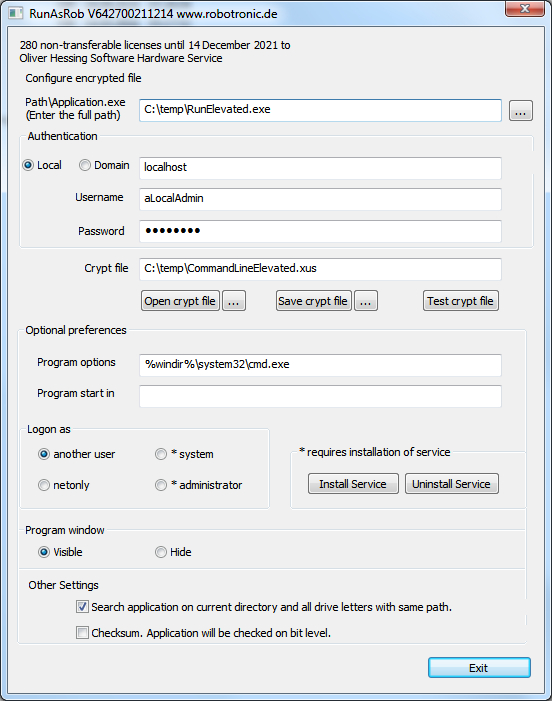

RunElevated
RunElevated
Run application with elevated privileges on an UAC system
Applications, which don't request elevated rights from UAC, but you need to start it with more privileges, can use RunElevated.
RunElevated can request elevated administrator permissions for another program or script.
You can elevate a batch file, the command line prompt cmd.exe, a file manager, a script, a single command like net.exe, older applications or any other program.
You can drag and drop the application onto RunElevated.exe
or you create a shortcut or a batch file with the command
>> RunElevated.exe Application.exe <<
Examples:
-
Start command prompt with elevated privileges from an administrator account.
>> RunElevated.exe %windir%\system32\cmd.exe <<
-
Start a batch file or another script with elevated rights from an administrator account.
>> RunElevated.exe c:\pfad\yourScript.bat <<
-
Call command net.exe with elevated permissions to add an useraccount.
>> RunElevated.exe NET USER username "password" /ADD <<
-
Launch command prompt from a non administrator accountwith administrator rights and elevated privileges.
You need RunasSpc.
>> runasspc.exe /program:"c:\path\RunElevated.exe" /param:"%windir%\system32\cmd.exe" /user:"administrator" /password:"pass" <<
-
Launch command line prompt from a non administrator account with administrator rights and elevated privileges by an encrypted file.
You need RunAsRob.exe
- Create an encrypted file in RunAsRob as shown in the screenshot below.
- Launch this encrypted file with command: >> RunAsRob.exe /cryptfile:"c:\temp\CommandLineElevated.xus" <<

Contact:
For any suggestions, errors, questions, specific requirements or adjustments please contact:
runas@robotronic.de
Licence:
RunElevated is free.
Download RunElevated >>>
Date: 2019-10-13
Data protection
Imprint